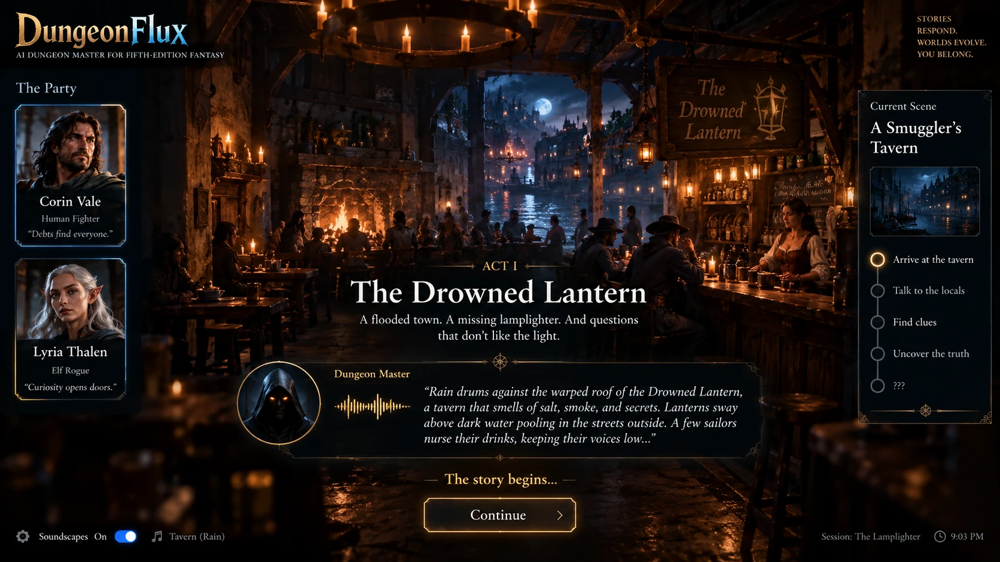
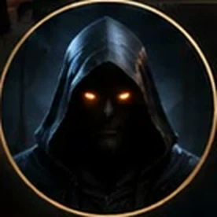
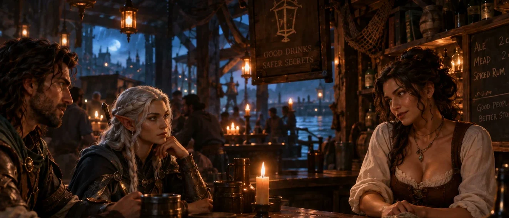
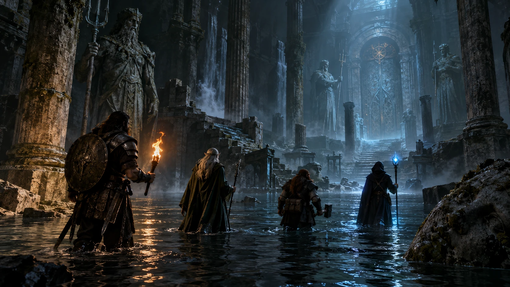
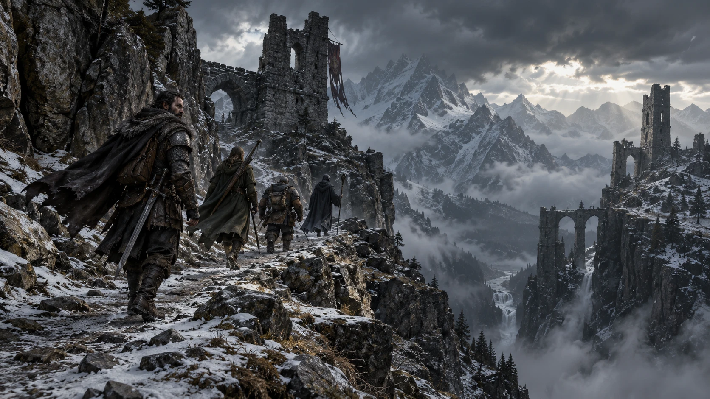
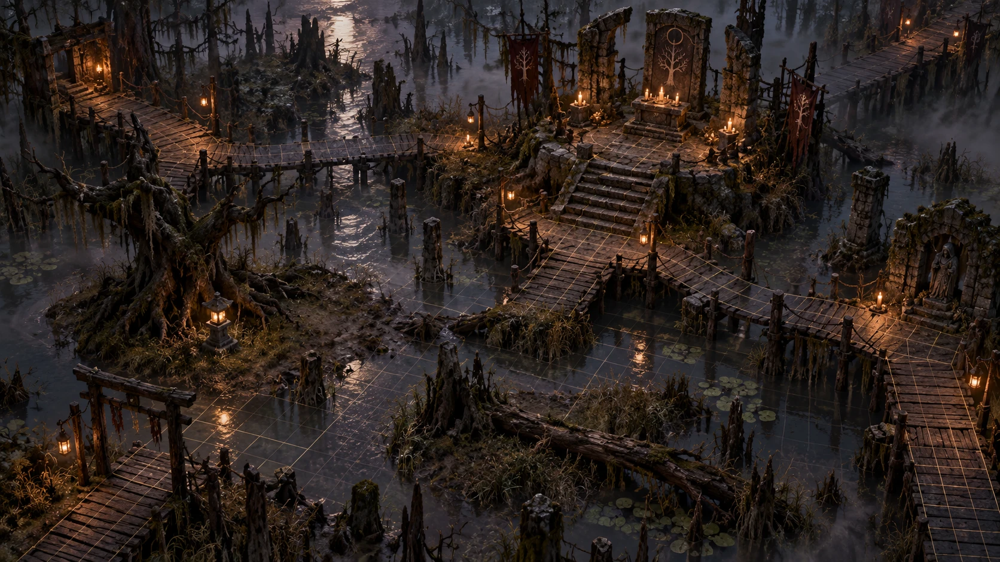
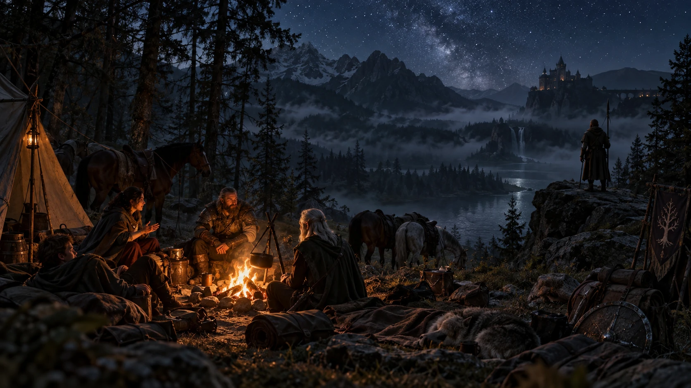

The dungeon master
Tells the story
- Writes the night around the heroes you made
- Gives every character a voice and a reason
- Describes what the dice decided, never the other way round
- Steers the night toward a real ending

An AI dungeon master for game night
The adventure plays on your TV. Everyone plays from their own phone. The dungeon master tells the story out loud, and every roll of the dice lands where the whole table can see it.
No accounts, no app to install. It runs on your own computer; the setup guide is on GitHub.


“Rain drums on the warped roof of the Drowned Lantern. Lanterns sway above the flooded street, and tonight, the lamplighter didn’t come home.”
Act I
What happens on the TV and on your phone, from the first scan to the last cliffhanger.

The TV shows a code and the names of everyone who has joined.
You scan it and you are at the table. No sign-up.
Pick a species and a gender. The engine rolls a legal character.
Your hero gets a name, a past, and a painted portrait beside the rest of the party.
The dungeon master sets the scene aloud, with music and rain underneath.
Your sheet fills in, ready for your first move.

Tap the microphone and say what your hero says. Your phone offers only the moves that make sense right now.
The barkeep answers in her own voice, and she keeps her secrets until you earn them.

Tap to attack. You see your odds before you commit.
The dice roll in full view, your hero strikes on a 3D battlefield, and the night ends on a cliffhanger clip starring your party.
Act II
This is one beat from the demo. Tap the phone, then watch the TV.

“Lamplighter? Never heard of him.” She keeps wiping the same spot on the bar.
Lyria Thalen, elf rogue
Act III
Most AI game masters lose track of the world, let players do anything, and make up numbers. DungeonFlux gives the job to two different minds, so none of that can happen.
Tells the story
Keeps the score
Each character knows only what they would know. The barkeep cannot let slip where the lamplighter went until someone earns it.
Leave the plot behind and someone from your hero’s past may arrive with a letter. The story finds you through the backstory you started with.
Art, music and video are prepared before the moment that needs them. If something runs late, the game plays on.

The sunken halls The crypt of the lich king
The crypt of the lich king The orrery library
The orrery library
The mountain ruins
The swamp shrineWhat you need
No. The TV shows a code, and each player opens the game in their phone’s browser by scanning it.
No. Your phone shows only the moves you can make at that moment, with the odds for each roll. The game follows fifth-edition fantasy rules from the System Reference Document 5.2.1.
The current scene is built for two players. Larger parties arrive with full campaigns.
Yes. Each player picks English or Spanish when they join, and their phone stays in that language.
The story changes course instead of stopping. Fail to persuade the barkeep, and the secret reaches you another way.

Bring a friend, a TV and your phones. The Drowned Lantern is waiting.
Start a tableRuns on your own computer. The setup guide is on GitHub.